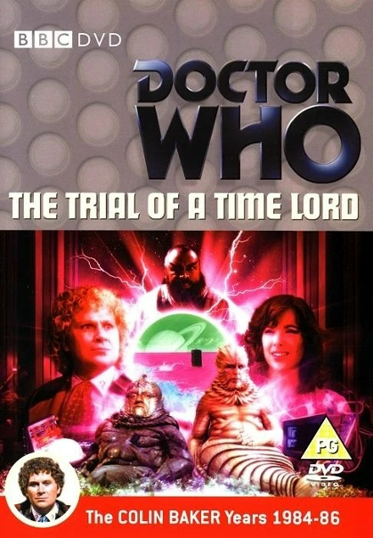
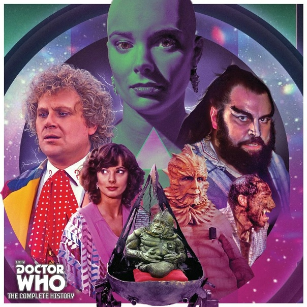

Эра Шестого Доктора (23 сезон)
<<< НАЗАД ||| 2. Деформация разума ||| ДАЛЬШЕ >>>
Субтитры: Русские и Английские |  |
|---|---|
Субтитры: только Английские | |
с фанатской локализацией видеоряда (HuracanTeam) Субтитры: только Английские | |
Mindwarp
Дата выхода: 4-25 октября 1986
Формат: 4 эпизода по 25 мин.
 |
Суд продолжается, и Валеярд предъявляет новые доказательства — приключение Доктора и Пери на планете Торос Бета, где они вновь сталкиваются с Силом, торговцем оружием. У его начальника Кива умирает тело, и учёный Крозье ищет способ пересадить разум в чужую оболочку. А поведение самого Доктора вызывает всё больше вопросов — не только у суда, но и у Пери.
Последнее появление Пери Браун в классическом сериале. Брайан Блессид в роли короля Ирканоса — габаритный и шумный, как и всегда. Второй раз появляется Сил, впервые встреченный в «Возмездии на Варосе». Название «Mindwarp» не звучит на экране — только в сценариях, эпизоды вышли как «Суд над Повелителем Времени», части 5–8.
 VHS - октябрь 1993 |   DVD+Boxset - 29 сентября 2008 |  Blu-ray - 7 октября 2019 * Версия в нашей группе |
|---|



Отрывок: